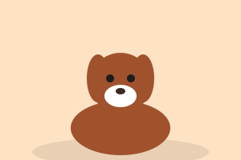
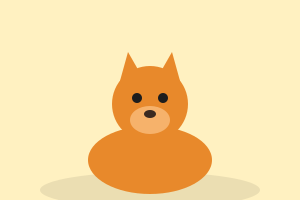
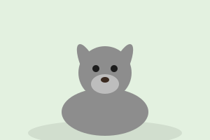
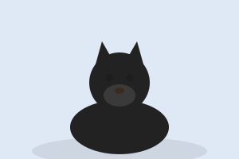
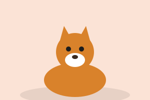
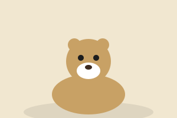

Biscuit
A 3-year-old beagle who loves long walks and knows how to sit for a treat.
Paws & Whiskers
Every pet on this list has had a checkup, their shots and a lot of belly rubs. The ones marked New! arrived this week. Scroll down to meet them all.

A 3-year-old beagle who loves long walks and knows how to sit for a treat.

Ten weeks old, and already the boss of the house. Likes string, boxes and naps.

A calm 2-year-old rabbit. A family is meeting her on Saturday.

A 6-year-old cat who wants a quiet home and a sunny window.

A 4-year-old corgi mix with more energy than legs. Loves fetch.

A chatty 1-year-old guinea pig who squeaks hello every morning.